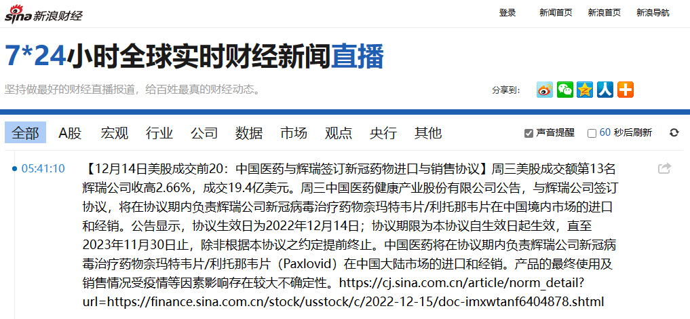

fanhan-inside
备份权威机构认证的权威机构发表的权威内容：
范某截图备份于此

这奖本身还是老一套，就在烈度类比两伊战争打得热火朝天的时候，表扬呼吁「和平」的东斯拉夫三拨毛子的「人权」组织代表，本身就是强烈的信号。
权威站点的链接已经截在图上，该页面提供公告的PDF下载，鹰语、鹅语、乌克兰语、白罗斯语各一份，至少可以用来对比东斯拉夫「方言连续体」的实际情况，以验证「语言就是拥有军队的方言」之论断。
就好比以汉语为母语的文艺爱好者曾经吐槽「古装宫廷剧全是辫子戏那一套」一样，从作者编剧到导演演员，整个剧组都是同一拨人，无论什么题材都能拍出「同质化」的结果，别的它们也不会吖。同理可证，西方（包括中东欧乃至中东）也一样，但凡「末世」题材，一定是《启示录》的味道，文艺批评业内曾经苛刻的形容「西方剧本全都来自圣经故事」用于此处也不算太刻薄。
好了，第一季〈瘟疫〉已经有官方扭扭捏捏的认证堂堂完结了，权威机构认证的权威媒体报道的权威人士的权威发言略，就是这几天舆论当中闹得最凶的热点。
现在「剧组」工作重点转向第二季〈战争〉了，已经有「完结预告」出现，按照文艺理论惯例，最后还有个小高潮甚至大高潮，全球八十亿读者观众兼群众演员期待么？
fanhan-inside
补充情报兼素材：
范某截图备份于此

解读很简单，「瘟疫」没有结束，但是《瘟疫》（注意书名号不能省略）结束了。至于为啥是辉瑞赢得大单而不是其它（即便美帝灯塔国境内也有大批竞争对手）大手药社，那就需要「专业人士」解读了。最近人民群众的解读总会指向阴谋论，尤其是各路「专业人士」之前多年权威发言的「合订本」流行的时候。
若说「合订本」，那么连同素材一起上传直播码字过程的《异闻录》当中倒是保存了不少应景的史料。过了这村儿没这店儿，有些发布的站点都不存在了，其内容现在估计搜都搜不到了。就比方说特效药，当时风头最劲的是「瑞德西韦（Remdesivir）」：
邦昌時代・本文
“听说花旗国有个新药已经被批准开展临床试验了，下次再赶上九省通衢这么多实验用耗子，还不知道什么时候呢”，柴禾妞说，“不过是已经在花旗国找了只耗子练过手的，也不算太离谱”。
“瑞德西韦（Remdesivir），本来是配合激素收拾埃博拉的，没效果”，郭春海补充，“这次拿来治肺炎，谁知道什么结果”。
“花旗国耗子有啥后遗症么？”柴禾妞问。
“上来先用万古霉素垫底，无论有啥后遗症都找好背锅侠了也”，郭春海解释，“兲朝这边也有这个趋势，救了命弄成慢性病，一辈子滋阴补肾去吧，大手医疗机构的现金流就有了”。
⸺《范版东幻异闻录》〔018〕碳基或铝基与深更半夜的飞行物或传单
邦昌時代・本文
“前一阵色目情报掮客还在炒作，说花旗国川普大统领的叔叔也是兲朝两弹元勋呢”，柴禾妞想起铺天盖地推送到眼皮底下的主旋律正能量，“举一反三触类旁通，盘尼西林（Penicillin）也差不多吧？”
“萝莉可教也”，郭春海竖起大拇指，“共产国际解散之后，奥地利就派人到延安教锤镰帮制药了，第二年就能投产，差不多和花旗国同步”。
“这次也差不多，如果按照部分业内人士揣测，新时代王冠肺炎病毒与人类共生从此成为流感之类常见病的话”，柴守宫补充，“那时候瑞德西韦（Remdesivir）就是战略物资了，谁家手头货多，谁就能保证自家产业正常运作，无论是赚钱还是打仗”。
“同理可证，垄断了进口渠道的钦定皇商，肯定会指使狼牙棒对其它渠道严厉打击和残酷镇压”，郭春海说，“那时候铤而走险富贵险中求的亡命之徒就会极大充沛，更何况身怀刻骨铭心之深仇大恨被逼反的目标”。
“我们是不是猜错了？尤其是那些逼上梁山杀人放火受招安的情节”，柴禾妞忽然想起一个关键，“你们或者本来就是江湖好汉草莽豪杰，或者没吃过猪肉也见过猪跑，对这些事情门儿清。目标可不是”。
“不一定非得手持十八般兵器上阵肉搏吖，组织除了大红棒之外还有草鞋白纸扇”，柴守宫手扶眼镜做白面书生状，“你看吟游诗人放话，替兲行道の梁山好汉也不全是鸡鸣狗盗之徒，工匠精神、美术天赋、畜牧专家、演艺明星、神医圣手……三教九流一应俱全呢”。
“比方说吧，忽然有个祖传老巫医贡献秘方，油盐酱醋加‘奥匈西韦’，温水冲服可治肺炎”，郭春海举例，“只要有疗效，谁还操心‘奥匈西韦’打哪儿来的”。
⸺《范版东幻异闻录》〔022〕四渡汉水出奇兵与百万雄师撵救星
这是《启示录》第一季〈瘟疫〉已经开始放送之后的「观后感」。而在那之前连载（2019.9.17 - 10.3）的《设定集》当中，按照「非典」经历构思的相关情节也有：
卡壳世界・作文
“在你的印象里，从什么时候开始，圣水不再掺杂一撮香灰了？”范铝杯继续反问，“当然现在偶尔还会当场画一张特别版赎罪券烧成灰撒进去”。
“你是说……圣水自打一开始就没有疗效？”芭蓓反应过来了。
“不知道，最起码对于黑死病没疗效”，范铝杯诱供成功，“平时收拾伤风感冒头疼脑热，没准也是你所谓故弄玄虚的那些暗号的功劳”。
“你怎么能从通俗小说当中看出这么多东西？”芭蓓表达对娱乐心情被破坏的不满，“还有，你怎么能看完了这么快就放下了？”
“我对待值得阅读的每一本书都这样”，范铝杯回答，“比方说，你知道教会从什么开始发表敕令狩猎女巫的么？那之前之后都发生了什么？与业务联系起来考虑”。
“应该是萨莱诺（Salerno）医学院正式建立的时候……吧？”，芭蓓回想那些忆苦思甜缅怀先烈的课程。
“没错，教会徒弟饿死师傅，这应该就是所谓女神与欧洲人的约定，八九不离十”，范铝杯不惮以最大的恶意揣测。
“没想到师傅还留了一手？”芭蓓举一反三触类旁通。
“希腊武德是怎么把埃及学者当奴隶的，罗马武德就怎么把希腊学者当奴隶”，范铝杯回顾历史，“据说所谓‘文明’，就是这么传播的”。
“对了，博洛尼亚大学正式设立医学院之后，狩猎女巫就停止了”，芭蓓恍然大悟，“没准这就是梵蒂冈认怂的表现，不知道还有什么后手，又要死多少人”。
“然后对于炼金术的态度也开明起来了是吧”，范铝杯补充，“这些充沛着诗与远方的胡言乱语也能公开出版了”。
⸺《范版西幻设定集》之十二〈此心安处即是吾乡〉
而具体到与我个人有关的内容，就是搜集过「大手药社（应该就是辉瑞）疫苗导致面瘫」的新闻报道⸺在《谈笑风生＠豆瓣》（或曰《一千零一页（1001 Pages）》）当中，现在懒得找了⸺于是与2010年4月初莫名其妙面瘫以及随后的「人生转折点」有些关系，具体什么关系还不知道。
总之，本篇日志开头说「剧组」工作重点转向第二季〈战争〉的收尾工作去了，无一字无来历。即便按照「非典」构思时对于「病毒神秘的消失」的情节进行阐述，也可以参考「三年自然灾害」以来「病毒神秘的不消失」理解，道理是一样的。
最后提醒读者，《启示录》是经典剧本，按照顺序上映四季，不代表四季的角色设备耗材也是串行依次到位，「剧组」肯定是同时推进翻拍计划的，「台本」说不定都是同时写好交给全球各个外景片场摄影棚导演筹备的。
于是上面搜集的情报当中关于索马里的报道，就可以认为是第三季〈饥荒〉序幕，当然后面还有个虽然原著当中没有明确定义但多方认为「代表核污染的绿马」登上历史舞台并活跃的第四季。